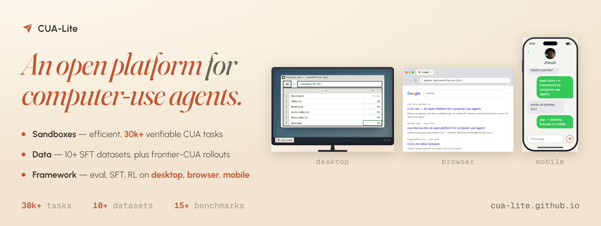

CUA-Lite: An Open Platform for Computer-Use Agents
Introducing CUA-Lite, an open platform for developing computer-use agents. It is built around three standardized abstractions — Lite.Gym for environments, Lite.Sample for supervised data, and one harness per model across eval, SFT and RL. 15+ benchmarks, 10+ datasets and 30k+ verifiable tasks are already plugged in.
Why CUA-Lite
Computer-use agents operate desktop, browser and mobile applications, and developing one takes environments with verifiable tasks, supervised data, and models, plus the harness that runs a model in an environment. Open-source efforts already exist for all three, but they remain scattered: each environment has its own interface and runtime; each supervised dataset its own format; each model its own action space, prompt format and rollout code.
Without a shared standard, connecting models to environments means rewriting the same code: an action mapping, a context window, and a rollout loop — so resources cannot be pooled and scaled, nor can evaluation, SFT and RL share one infrastructure.
CUA-Lite closes all three, in one place:
- Lite.Gym, the unified environment interface — 15+ benchmarks, plus optional VM-free desktop sandboxes holding 30k+ verifiable training tasks.
- Lite.Sample, the unified supervised data format — 10+ datasets and fresh rollouts, free on Hugging Face.
- Model harnesses shared across eval, SFT and RL — one per model, implemented for 14 model families.
Lite.Gym: Unified environment interface
Any agent plugs into any environment through one interface.
lite.gym exposes an environment as a
Gym-style reset / step / close loop. The
loop standardizes one observation format across environments — a screenshot,
text, or both per tool call — and one GUI action space per platform, issued as
tool calls: click and type on desktop and browser,
tap and swipe on mobile, plus extra tools per
environment such as bash in our desktop sandboxes. It wraps the
environment's own runtime: a VM, a browser, or a mobile emulator.
lite.gymCUA-Lite also provides optional, lightweight VM-free desktop sandboxes of its own: Docker containers that replicate OSWorld's desktop at much lower cost and hold 30k+ verifiable tasks for training. They need no /dev/kvm, the hardware virtualization VM-based benchmarks require, so they run on any host with Docker — and Lite.OSWorld (ours) runs OSWorld's own tasks and evaluators, unchanged.
Beyond OSWorld: scalable training sandboxes
The VM-free container isn't just for OSWorld — it's the foundation for CUA-Lite's family of sandboxes. The same base already runs browser and desktop tasks, and real science desktops: GMAT flying spacecraft, PyMOL turning proteins.
Call for sandbox contributors. A sandbox only matters while people run it. Add yours to CUA-Lite, and every agent trains and benchmarks on it — now and later. One integration, and the whole field builds on it.
Lite.* environments ↗ · Env guide ↗ · Leaderboard ↓
Lite.Sample: Unified supervised data format
Convert a dataset once, and every agent can train on it.
LiteSample is the one schema, shared
across every env, agent, and task type, free on Hugging Face.
One shape for all of it, whatever it came from: messages whose tool calls are the interface's actions and whose tool results are its observations — from a GUI grounding label to a full rollout.
LiteSample{ }CUA-Lite ships an adapter per model,
packing a unified LiteSample into the exact
training format each one needs. The figure above shows one, with the building
blocks to add your own.
10+ datasets are already on Hugging Face: existing CUA corpora — grounding · understanding · use — preprocessed into Lite.Sample, plus fresh rollouts from frontier CUAs. Browse the corpora and the rollouts; below, one of them, WebGym:
Call for data contributors. Data only matters while models can train on it. Share yours with CUA-Lite, and every agent trains on it — even models that don't exist yet. One conversion, and the whole community trains on it.
Preprocessing guide ↗ · Agent harnesses ↗ · SFT guide ↗
Model harnesses: shared across eval, SFT & RL
Each model has one harness, the code that adapts it to the interface and the format. Through its harness a model runs in every integrated environment, and eval and RL consume the rollouts it produces; with the same harness, any stored LiteSample is rendered into the model's own training format for SFT — here, Qwen3.5's:
Eval, any agent on any benchmark
Set --model-id for the agent and --env-id for the benchmark:
--model-id \
--env-id \
--splits eval \
--config-path scripts/configs//default/.yaml
15+ benchmarks are already integrated — ours is the VM-free runtime, the interface and the integration, not the task suites — and the VM-free desktop sandboxes are an addition, not a replacement: the original OSWorld VM sits right beside Lite.OSWorld, and the mobile benchmarks still need a VM or an emulator:
SFT & RL, any open agent
SFT on CUA-Lite's corpora, then reinforce in its envs — GRPO and beyond, on the Slime trainer. Train any open agent on any data and any env:
Lite.Sample, adapted to each model — pick a dataset and a student:
# 1 · download the corpus
$ python -m lite.data.hf.download \
--out .data/hf/cua-lite/
# 2 · export a model-ready SFT parquet
$ python -m lite.train.export.export_sft \
--model-id \
--config scripts/configs//recipes/sft/default.yaml \
--data-paths .data/hf/cua-lite/ \
--image-root .data/hf \
-o .data/sft//.parquet
# --- Slime container (see docs/slime.md) ---
# 3 · supervised fine-tune
$ MODEL_ID= \
PROMPT_DATA=.data/sft//.parquet \
bash scripts/train/run_sft.sh
Rollouts scored in the env drive GRPO updates — pick a model and env:
ENV_ID= \
CONFIG_PATH=scripts/configs//default/.yaml \
bash scripts/train/run_grpo.sh
Bring a dataset, an env, or an agent — each one compounds. Or just tell us what's missing — GitHub · Hugging Face · Email.